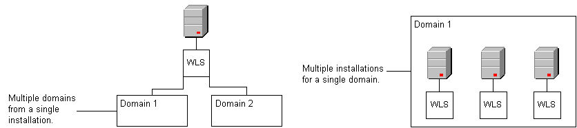
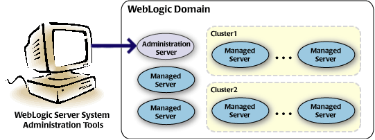

ALTIBASE와 WebLogic의 연동에 앞서 기본적으로 알아야 할 WebLogic과 관련 용어에 대해 간략하게 설명한다.
도메인
도메인이란 WebLogic 서버 인스턴스(instance)에 대한 논리적인 그룹으로 하나의 도메인은 하나 이상의 WebLogic 서버 인스턴스로 구성된다.
사용자는 하나의 WebLogic (WebLogic Server/WLS)을 설치하여 여러 개의 도메인을 구성하거나 여러 개의 WebLogic을 설치하여 하나의 도메인으로 구성할 수 있다.

WebLogic 서버 인스턴스 (관리 서버, 관리된 서버)
WebLogic 서버 인스턴스란 웹 응용프로그램(Web Application), 웹 서비스(Web Services), EJB 등을 배치(deploy)할 수 있는 하나의 프로세스(process)로서
“관리 서버”, “관리된 서버”로 구분한다.

- 관리 서버 (Administration Server)
도메인 전체를 관리할 수 있도록 관리 콘솔(Administration Console)이 함께 배치된 WebLogic 서버 인스턴스로 도메인 생성시 함께 생성된다.
- 관리된 서버 (Managed Server)
관리 서버를 제외한 모든 WebLogic 서버 인스턴스로 별도로 추가하거나 인스턴스간 클러스트링(clustering)이 가능하다.
즉, 하나의 도메인은 1개의 관리 서버와 0개 이상의 관리된 서버로 구성된다.
JDBC 데이터 소스
JDBC 데이터 소스란 WebLogic 서버 인스턴스가 RDBMS에 접속하기 위한 자바 객체이다.
연동할 RDBMS에 대한 JDBC 데이터 소스를 생성 후 해당 JDBC 데이터 소스를 사용할 WebLogic 서버 인스턴스를 지정하면 해당 WebLogic 서버 인스턴스에 배치된 웹 응용프로그램은 소스코드에 JDBC 데이터 소스의 JNDI (Java Naming and Directory Interface) 이름을 명시하여 대상 RDBMS와 연동을 할 수 있다.
JBDC 데이터 소스를 생성하기 위해서는 관련 JDBC 드라이버가 WebLogic에서 사용할 수 있도록 사전에 설정되어 있어야만 한다.
커넥션 풀(pool)
JDBC 데이터 소스 생성 시 자동으로 생성되는 접속 대상 RDBMS와의 접속 집합으로 “초기 용량”, “최대 용량”과 같은 다양한 속성에 의해 조절된다.
커넥션 풀, 접속 풀은 동의어로 본 문서에서는 “커넥션 풀”로 통일한다.
배치, 배포
배치, 배포는 모두 deploy 를 의미하는 동의어로 본 문서에서는 “배치”로 통일한다.
{kind=link}
{kind=link}
{kind=link}